Коллаж с розой
В этом уроке речь пойдет о создании эффекта, который вы наверняка встречали на просторах интернета. Мне этот эффект понравился и я решил создать нечто подобное с помощью Photo-Paint. В качестве исходного изображения, я взял фотографию розы (рис. 1).
Данное изображение имеет размер примерно 271х180 мм и разрешение 72 dpi. Для создания конечного результата было взято еще одно изображение, но с размерами 328х219 мм и разрешением 300 dpi, скриншот показан на рис. 2.
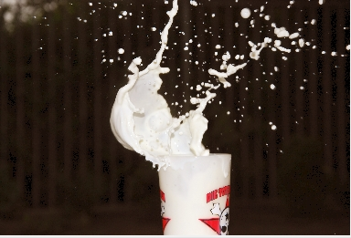
Для дальнейшей работы, нам понадобится часть этого изображения с брызгами молока. Для этого, я его обрезал и изменил разрешение на 72 dpi. Теперь начнем создавать желаемый эффект.
1. Создайте изображение с размерами больше, чем исходное на рис. 1. Я выбрал размер 314х220 мм с разрешением 72 dpi и черным фоном.
2. В файле с изображением розы, нажмите комбинацию клавиш Ctrl + A, чтобы выделить все и скопируйте в Буфер обмена. Перейдя в новый документ, вставьте туда розу из Буфера. Переместите ее в нижнюю часть изображения (рис. 3).
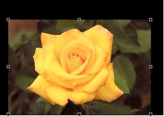
3. Выделите розу, слишком уж большая точность не нужна. Если небольшая часть по краям лепестков останется невыделенной, не страшно. Инвертируйте выделение, нажав кнопку Invert mask (Инвертировать маску) на Стандартной панели инструментов.
4. Нажмите комбинацию клавиш Ctrl + стрелка вверх, чтобы создать из выделения объект. Перетащите его вверх, до самого верха фона. Получится, как на рис. 4.
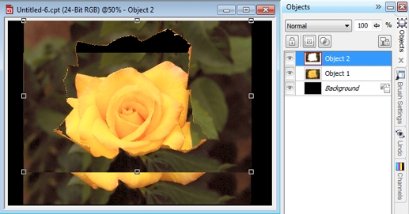
5. Выполните команду Effects > Blur > Gaussian Blur (Эффекты > Размытость > Размытость по Гауссу). Установите значение Radius (Радиус) = 20 px. Таким образом мы создадим фон.
6. В докере Objects (Объекты) перетащите размытый объект под исходную розу.
7. Теперь нам нужно убрать видимую границу между объектами. Воспользуемся инструментом Object Transparency Brush (Кисть Прозрачность Объекта), горячая клавиша 3 (цифра 3). Меняя на Панели свойств значение Transparency (Прозрачность), сотрите границу между объектами. Как мне кажется, на самом деле этот параметр должен называться Непрозрачность, т. к. при увеличении значения, при обработке кистью прозрачность уменьшается, вместо того, чтобы увеличиваться. Значения я менял от 0 до 130 (ориентировочно). Результат должен получиться, примерно, как на рис. 5.
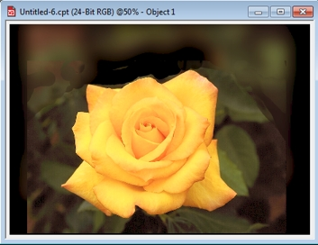
8. Теперь займемся подготовкой изображения с брызгами. Выполните команду Adjust > Desaturate (Настройка > Убрать насыщенность). А потом команду Adjust > Contrast Enhancement (Настройка > Увеличение контрастности) (рис. 6).
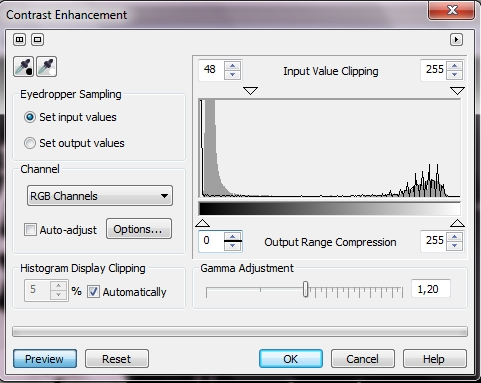
9. Выполните команду Mask > Color Mask (Маска > Цветовая маска) и установите параметры, как на рис. 7 и щелкните пипеткой черный цвет в изображении.
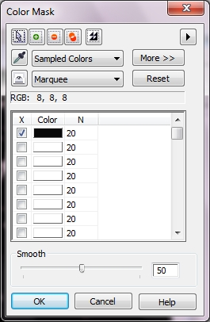
10. Инвертируйте выделение и выполните команду Mask > Mask Outline > Smooth (Маска > Абрис маски > Сглаживание) со значением Radius (Радиус) равным 1. Скопируйте выделенное и вставьте в изображение с розой (рис. 8).
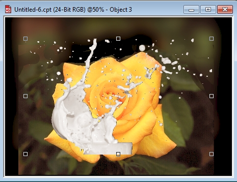
11. Выполните команду Object > Flip > Horizontally (Объект > Перевернуть > По горизонтали). Затем разместите брызги поверх розы и с помощью инструмент Object Pick (Указатель объектов) измените размер, как на рис. 9.
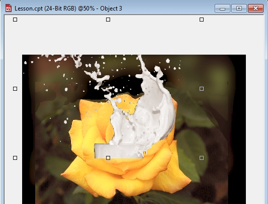
12. Теперь начнем подбирать цвет брызг. Выполните команду Effects > Camera > Foto Filter (Эффекты > Камера > Фотофильтр) (рис. 10).
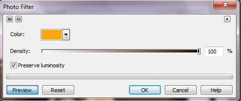
13. Теперь немного подправим форму брызг, подтерев лишнее с помощью Ластика. Не старайтесь на этом шаге дотошно затирать лишнее, более точная подгонка формы брызг еще впереди. Продолжим «подгонять» цвет. Выполните команду Adjust > Brightness/Contrast/Intensity (Настройка > Яркость/Контрастность/Интенсивность) и установите параметры, как на рис. 11.
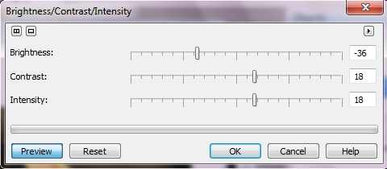
Изображение станет, как на рис. 12.
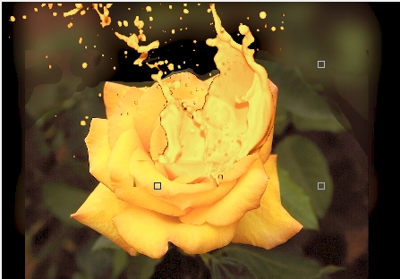
14. Выполните команду Adjust > Hue/Saturation/Lightness (Оттенок/Насыщенность/Яркость) и в диалоговом окне установите переключатель Channels (Каналы) в положение цветового канала Yellow (Желтый). Остальные параметры показаны на рис. 13.
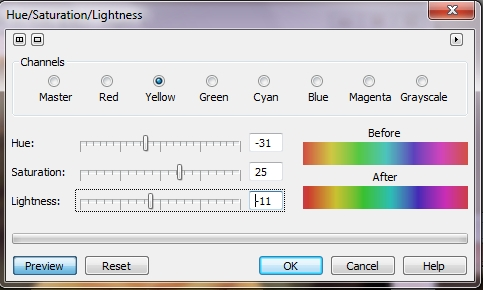
15. Все что останется сделать после этого, подтереть Ластиком лишнее и увеличив Прозрачность, обработать также местами Ластиком границы брызг, чтобы смягчить переход между брызгами и розой. Результат показан на рис. 14.
Если проявить большую усидчивость, можно еще улучшить эффект. К сожалению получилось не совсем так, как хотелось, оттого, что брызги не уместились по высоте из-за исходного изображения розы, в котором над розой практически не было места. Мы немного «нарастили» фон, но этого оказалось недостаточно.
Можно сделать подобный эффект «с вариациями» применительно к букету цветов, тогда будет смотреться лучше.